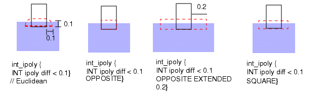

Internal
Layer operation
Measures the separation between the interior sides of edges from the input layers. Measured edge pairs that satisfy the given constraint are output. Intersecting edge pairs are not measured by default.
Usage
One-Layer Syntax:
INTernal layer1 constraint [metric] [edge_shielding_filter] [orientation_filter] [projection_filter] [angled_filter] [corner_filter] [intersection_filter] [EXCLUDE FALSE] [region_output]
Two-Layer Syntax:
INTernal layer1 layer2 constraint [metric] [polygon_containment] [edge_shielding_filter] [connectivity_filter] [orientation_filter] [projection_filter] [angled_filter] [corner_filter] [intersection_filter] [EXCLUDE FALSE] [region_output]
Argument Syntax
metric: [OPPOSITE | OPPOSITE EXTENDED value | SQUARE | OPPOSITE SYMMETRIC | OPPOSITE FSYMMETRIC | OPPOSITE EXTENDED SYMMETRIC value | OPPOSITE EXTENDED FSYMMETRIC value | OPPOSITE1 | OPPOSITE2 | OPPOSITE EXTENDED1 value | OPPOSITE EXTENDED2 value | SQUARE ORTHOGONAL]
polygon_containment: [MEASURE COINcident | MEASURE ALL]
edge_shielding_filter: [EXCLUDE SHIELDED [0 | 1 | 2 | 3 | 4] [BY LAYER layer] [COUNT {0 | 1 | 2}]]
connectivity_filter: [CONNECTED | NOT CONNECTED]
orientation_filter: [{[ACUTE ALSO | NOT ACUTE] [PARAllel ALSO | NOT PARAllel]
[NOT PERPendicular | PERPendicular ALSO] [NOT OBTUSE | OBTUSE ALSO]}
| ACUTE ONLY | PARAllel ONLY | PERPendicular ONLY | OBTUSE ONLY]
projection_filter: [PROJecting [projection_length] | NOT PROJecting]
angled_filter: [ANGLED [angle_constraint]]
corner_filter: [CORNER TO CORNER [corner_constraint] | CORNER TO EDGE | CORNER | NOT CORNER]
intersection_filter: [{[ABUT [abut_constraint]] [OVERLAP] [SINGULAR]} [INTERSECTING ONLY]]
EXCLUDE FALSE: EXCLUDE FALSE
region_output: [REGION | REGION EXTENTS | REGION CENTERLINE [value]]
Description
For the single-layer syntax, measures the separations between interior-facing sides of edges from the same polygon on layer1. For the two-layer syntax, measures the separations between the interior-facing sides of layer1 edges and the interior-facing sides of layer2 edges.
There are multiple secondary keyword sets that control the behavior of the INTernal operation for specialized applications. INTernal is principally used for width and overlap checks as shown here:
The rule checks shown in the preceding figure measure the width between the layer1 edges (single-layer syntax) and overlap of layer1 and layer2 edges (two-layer syntax). The line segments with arrows indicate where the measurements occur. Notice the order of the layers is unimportant in the two-layer syntax. By default, edge segments from both layers that meet the measurement constraint are output for the two-layer syntax.
The default INTernal operation uses the ACUTE ALSO, PARAllel ALSO, NOT PERPendicular, and NOT OBTUSE keywords with the Euclidean measurement metric (which has no keyword).
The following figure shows the most common type of INTernal rule check. It uses the ABUT and SINGULAR secondary keywords, which are discussed later in this section. ABUT checks intersecting edges and SINGULAR checks single-point interactions. INTernal does not check these situations by default.
The tool outputs measured edge pairs satisfying the given constraint. The INTernal operation is polygon-directed if you use the REGION keyword, edge-directed if you enclose a layer in the [ ] or ( ) operator, and error-directed by default. Error-directed output cannot be used as input for other operations, except DFM Analyze, DFM Expand Edge, DFM Property, DFM RDB, DFM Shift, and DFM Shift Edge.
If INTernal is used to generate derived polygon layers (as opposed to edge layers), it is recommended to use the OPPOSITE REGION keyword, like this:
x = INT lay1 lay2 < 0.04 ABUT < 90 OPPOSITE REGIONSee “region_output” for more details about deriving polygon layers with INTernal.
Many fundamental concepts and details of dimensional check operations may be found in the section “Dimensional Check Operations” in the Calibre Verification User’s Manual. You may want to have this reference open while reading about INTernal.
Related operations include Enclosure, External, TDDRC, With Width, DFM Measure, and DRC Tolerance Factor.
Arguments
- layer1
An original layer or layer set, or a derived polygon or edge layer.
Positive or negative edge data may be used to form derived edge layers. To output only the edges from layer1 that meet the constraint, called positive edge data, enclose layer1 in brackets [ ]. To output only the edges from layer1 that do not meet the constraint, called negative edge data, enclose layer1 in parentheses ( ). No more than one set of brackets or parentheses may appear in a given operation. Refer to “Edge-Directed Output” in the Calibre Verification User’s Manual for additional details.
- layer2
An original layer or layer set, or a derived polygon or edge layer.
Positive or negative edge data may be used to form derived edge layers. To output only the edges from layer2 that meet the constraint, called positive edge data, enclose layer2 in brackets [ ]. To output only the edges from layer2 that do not meet the constraint, called negative edge data, enclose layer2 in parentheses ( ). No more than one set of brackets or parentheses may appear in a given operation. Refer to “Edge-Directed Output” in the Calibre Verification User’s Manual for additional details.
- constraint
One of the standard constraints, except for > a, >= a, and != a. Specifies the checking distance, which must have an upper bound. The constraint must contain non-negative real numbers and is interpreted in user units. The standard constraints are listed in the “Constraint Notation” column of Table 1 in the “Constraints” topic.
Note:INTernal operations written to test a greater than or equal zero (>=0) condition within an interval constraint (as in >=0 <=4), do not return a touching/coincident (=0) condition. The ABUT and SINGULAR secondary keywords should be used to check =0 conditions.
Using constraints that are very large in comparison to the typical feature size of a layer, and when the layer is rather dense, can result in poor performance. If your performance for an INTernal operation is poor, check to see if the constraint values are large in comparison to the expected feature sizes of the input layers. If so, attempt to rewrite your rules to reduce the layer data presented to the INTernal operation. See “Efficient Width and Spacing Checks” in the Calibre Verification User’s Manual.
- metric
Secondary keyword set that instructs dimensional check operations to use a specified edge measurement metric when measuring the separation between edges. By default, the measurement metric is Euclidean. You do not need to specify any keyword to get a Euclidean measurement.
For detailed information about all of these metrics, refer to the “Metrics” section of the Calibre Verification User’s Manual.
There are three basic metrics in addition to the default.
OPPOSITE — Specifies perpendicular extension of the measurement region from the edge, but not along the edge, is equal to your constraint. It converts the “<” constraint to “<=” when measuring intersecting edges. This causes output when intersecting edges abut at 90-degree angles. Refer to “intersection_filter” for more information about edge intersection.
OPPOSITE EXTENDED value — Specifies to use the OPPOSITE metric with an extension of the measurement region along the edge. The value is an extension distance in user units and is measured along the edge direction; it must be a positive number.
SQUARE — Specifies the extension of the measurement region along the edge and away from the edge is equal to your constraint.
The examples in the following figure show the four most commonly used measurement regions in red. They show only the measurement regions from ipoly to diff. There are also measurement regions that would be constructed from diff to ipoly.
Figure 3. Measurement RegionsThe following highly specialized metrics are used primarily for optical process correction applications.
OPPOSITE SYMMETRIC — Specialized metric based upon the OPPOSITE metric. Used for adjusting edge output for non-orthogonal edges.
OPPOSITE FSYMMETRIC — Specialized metric based upon the OPPOSITE SYMMETRIC metric. Uses a fill-in algorithm that outputs single edges, where disjoint edges might otherwise be output.
OPPOSITE EXTENDED SYMMETRIC value — Specialized metric based upon the OPPOSITE EXTENDED metric. Used for adjusting edge output for non-orthogonal edges.
OPPOSITE EXTENDED FSYMMETRIC value — Specialized metric based upon the OPPOSITE EXTENDED SYMMETRIC metric. Uses a fill-in algorithm that outputs single edges, where disjoint edges might otherwise be output.
OPPOSITE1 — Unidirectional metric based upon the OPPOSITE metric. Similar to OPPOSITE SYMMETRIC but measures edges in one direction from the first input layer to the second input layer.
OPPOSITE2 — Unidirectional metric based upon the OPPOSITE metric. Similar to OPPOSITE SYMMETRIC but measures edges in one direction from the second input layer to the first input layer.
OPPOSITE EXTENDED1 value — Unidirectional metric based upon the OPPOSITE EXTENDED metric. Similar to OPPOSITE EXTENDED SYMMETRIC but measures edges in one direction from the first input layer to the second input layer.
OPPOSITE EXTENDED2 value — Unidirectional metric based upon the OPPOSITE EXTENDED metric. Similar to OPPOSITE EXTENDED SYMMETRIC but measures edges in one direction from the second input layer to the first input layer.
SQUARE ORTHOGONAL — Metric used to simulate mask misalignment in the x- and y-directions.
- polygon_containment
The secondary keywords in this set instruct two-layer dimensional check operations to alter the polygon containment criteria when measuring the separation between edges. For more about this topic, refer to the “Polygon Containment Criteria” section of the Calibre Verification User’s Manual.
MEASURE COINcident — Relaxes the polygon containment criteria to measure coincident edges: edge A or B may additionally be inside coincident. Coincident edges will be measured unless edge A is inside coincident with an edge from layer2 from a different polygon as edge B, or edge B is coincident inside with an edge from layer1 from a different polygon as edge A.
MEASURE ALL — Specifies to ignore the polygon containment criteria. This allows INTernal to “see through” polygons that ordinarily it would not. The following figure shows an example.
Figure 4. MEASURE ALL- edge_shielding_filter
Secondary keyword set used to suppress the edge measurement process to various levels due to the presence of shielding edges. A shielding edge is an edge S, which completely or partially blocks the line-of-sight between edges A and B. This process is described in detail in the “Edge Shielding” section in the Calibre Verification User’s Manual. The syntax is as follows:
EXCLUDE SHIELDED [level] [BY LAYER layer] [COUNT value]
level — Specifies the amount of effort the tool expends to identify a shielding edge. The level is an integer from 0 to 4, with 4 being used if level is omitted. Specifying 0 indicates no effort is expended to do this, with increasing levels of effort through level 4. Level 4 provides maximum shielding effect, and also requires the greatest amount of processing time. Level 0 is used if MEASURE ALL is specified alone. If EXCLUDE SHIELDED is used with MEASURE ALL, the latter keyword is ignored. When specifying the COUNT keyword pair, you must specify a level of 3 or 4.
BY LAYER layer — By default, in a two-input-layer DRC operation the shielding edge may originate from either of the input layers. However, you can use the optional BY LAYER keyword pair to specify one of the input layers to the operation. This applies only to levels 3 and 4, and mandates that the shielding edge must originate from the specified input layer.
COUNT value — By default, the effect of shielding is independent of the actual number of edges. For example, with EXCLUDE SHIELDED levels 3 or 4, edges A and B are shielded the same in all three configurations shown here:

However, you can use the optional COUNT keyword pair to specify that the number of shielding edges must be greater than the value for shielding to occur. This applies only to levels 3 and 4. Valid values for COUNT include:
0 — Specifies all configurations are shielded. (default)
1 — Specifies the left-most configuration is not shielded.
2 — Specifies the right-most configuration is shielded.
- connectivity_filter
Secondary keyword set that instructs two-layer Internal operations to measure the separation between edges based upon their connectivity. Dimensional check operations ignore connectivity if you do not specify the secondary keywords in this set. Possible choices are:
CONNECTED — Specifies to measure only edges from polygons that belong to the same net.
NOT CONNECTED — Specifies to measure only edges from polygons that do not belong to the same net.
To use these filters, the input layers must possess valid connectivity. In the following figure, output occurs based upon connectivity information.
Figure 5. Connectivity-Based ChecksFor related information, see “Node-Preserving Operations” in the Calibre Verification User’s Manual.
- orientation_filter
Secondary keyword set that instructs the dimensional check operations to measure the separation between edges based upon their appropriate angle or edge orientation. See the “Appropriateness Criteria” section of the Calibre Verification User’s Manual.
Each statement can include one choice from each of these four subsets: acute_filter, parallel_filter, perpendicular_filter, and obtuse_filter. However, the secondary keywords having ONLY in them cannot be specified with any other secondary keywords from the orientation_filter set.
The default parameters in this keyword set (PARAllel ALSO, ACUTE ALSO, NOT PERPendicular, NOT OBTUSE) instruct dimensional check operations to measure the separation between the corresponding sides of edges that face each other and that have an appropriate angle of less than 90 degrees.
The following figure shows the edge orientations that are checked by default using the two-layer Internal operation for an appropriate value m. The single-layer form is similar in its behavior. No other orientations are checked unless you select other filters. Note that intersecting (or abutting) edges as shown by angle B are not checked by default.
Figure 6. Default Edge Orientations Checked by InternalThe orientation_filter subsets are defined as follows:
acute_filter
Refer to the edge configurations in Figure 7.
ACUTE ALSO — Specifies to measure edges with an appropriate angle a, such that 0 < a < 90 degrees. This is the default behavior if you do not specify a choice from this subset in the operation. ACUTE ALSO checks configurations 1 through 3 in the figure on edge orientations (this assumes none of the other default settings are changed).
ACUTE ONLY — Specifies to measure only edges with an appropriate angle a, such that 0 < a < 90 degrees. You cannot use this keyword and a keyword from the other orientation_filter subsets in the same Internal operation. ACUTE ONLY checks configuration 3 in the figure with edge orientations.
NOT ACUTE — Specifies not to measure edges with an appropriate angle a, such that 0 < a < 90 degrees. NOT ACUTE checks configurations 1 and 2 in the figure with edge orientations.
Note:Orientations 4 and 5 can be checked if the appropriate filters are set (for example, PERPENDICULAR ALSO and OBTUSE ALSO).
Figure 7. Edge Orientationsparallel_filter
Refer to the edge configurations in Figure 7.
PARAllel ALSO — Specifies to measure parallel edges in addition to non-parallel edges. This is the default behavior if you do not specify a choice from this subset in the operation. PARALLEL ALSO checks configurations 1 through 3 in the figure on edge configurations (this assumes none of the other default settings are changed).
PARAllel ONLY — Specifies to measure only parallel edges. You cannot use this keyword and a keyword from the other orientation_filter subsets in the same Internal operation. PARALLEL ONLY checks configurations 1 and 2 in the figure on edge configurations.
NOT PARAllel — Specifies not to measure parallel edges. NOT PARALLEL checks configuration 3 in the figure on edge configurations.
Note:Orientations 4 and 5 could be checked if the appropriate filters are set (for example, PERPENDICULAR ALSO and OBTUSE ALSO).
perpendicular_filter
Refer to the edge configurations in Figure 7.
NOT PERPendicular — Specifies not to measure perpendicular edges. This is the default behavior if you do not specify a choice from this subset in the operation. NOT PERPENDICULAR checks configurations 1 through 3 in the figure on edge configurations (this assumes none of the other default settings are changed).
PERPendicular ONLY — Specifies to measure only perpendicular edges. You cannot use this keyword and a keyword from the other orientation_filter subsets in the same Internal operation. PERPENDICULAR ONLY checks configuration 4 in the figure on edge configurations.
PERPendicular ALSO — Specifies to measure perpendicular edges in addition to other orientations. PERPENDICULAR ALSO checks configurations 1 through 4 in the figure on edge configurations.
Note:Orientation 5 could be checked if you set OBTUSE ALSO.
obtuse_filter
Refer to the edge configurations in Figure 7.
NOT OBTUSE — Specifies not to measure edges with an appropriate angle a, such that 90 < a < 180 degrees. This is the default behavior if you do not specify a choice from this subset in the operation. NOT OBTUSE checks configurations 1 through 3 in the figure on edge configurations (this assumes none of the other default settings are changed).
OBTUSE ONLY — Specifies to measure only edges with an appropriate angle a, such that 90 < a < 180 degrees. You cannot use this keyword and a keyword from the other orientation_filter subsets in the same Internal operation. OBTUSE ONLY checks configuration 5 in the figure on edge configurations.
OBTUSE ALSO — Specifies to measure edges with an appropriate angle a, such that 90 < a < 180 degrees. OBTUSE ALSO checks configurations 1 through 3 and 5 in the figure on edge configurations.
Note:Orientation 4 could be checked if you set PERPENDICULAR ALSO.
- projection_filter
Secondary keyword set that instructs dimensional check operations to measure the separation between edges based upon their mutual edge projection. Note that the projections of edges onto other edges (if any) are not the output, rather the results of the INTernal operation and associated secondary keywords are output if the specified projection exists. For the definition of edge projection, see the discussion of projection_filter in the ENClosure statement.
PROJecting [projection_length] — Specifies to measure the separation between two edges only when one edge projects onto the other edge. If projection_length is also specified (it takes the form of a constraint) and the length of any projection conforms to the projection_length constraint then the results are output. The option’s default behavior is projection_length set to >=0.
NOT PROJecting — Specifies to measure the separation between two edges only when neither edge projects onto the other edge.
Hierarchical considerations — For hierarchical applications, projection and projected length may not be accurately determined if the projection occurs at a hierarchical level well outside the design rule distance between the edges. This problem occurs when two non-parallel edges A and B are being measured with PROJECTING or NOT PROJECTING specified, one or both of the edges extends across multiple hierarchical levels, and the actual projecting portions are well outside the design rule distance between the edges. For constrained PROJECTING filters, if you do not specify the PARALLEL ONLY keyword, Calibre issues a warning and sets the PARALLEL ONLY keyword filter. If you have an unconstrained PROJECTING filter and you want hierarchical and flat results to be the same, it is highly recommended that PARALLEL ONLY be specified.
- angled_filter
Secondary keyword set that instructs dimensional check operations to measure edge pairs based on orthogonality with respect to the coordinate system axes.
ANGLED [angle_constraint] — Specifies to measure the two edges only when the number of non-orthogonal edges in the pair meets the given constraint. The constraint is optional and when omitted, defaults to > 0. See the following figure.
Figure 8. ANGLEDExamples:
INT poly < 3 ANGLED == 2 // Measure 2 edges only if both are angled. INT poly < 3 ANGLED < 2 // Measure 2 edges only if one or neither is // angled.- corner_filter
Secondary keyword set that instructs dimensional check operations to measure edge clusters based on corner-to-corner or corner-to-edge orientation.
You cannot specify this filter with an orientation_filter, projection_filter, or angled_filter.
CORNER TO CORNER [corner_constraint] — Specifies to measure the edge clusters only if they are in a corner-to-corner configuration. The constraint is optional. When you specify corner_constraint, the only allowed options are == 45, != 45, and >= 0. The == 45 and != 45 constraints limit the measurement of edges in a corner-to-corner configuration according to the angle that the line segment linking the opposing corners makes with the x-axis. The >= 0 constraint allows projection if the projected length is at most zero.
CORNER TO EDGE — Specifies to measure the edge clusters only if they are in a corner-to-edge configuration (defined later).
CORNER — Specifies to measure the edge clusters only if they are in a corner-to-corner or corner-to-edge configuration.
NOT CORNER — Specifies to measure the edge clusters only if they are not in a corner-to-corner or corner-to-edge configuration.
The corner-to-corner and corner-to-edge filters are defined as follows: For a single-layer dimension check, let A and B be two edges from layer1 to be measured. For a two-layer check, let A be the edge from layer1 and B the edge from layer2. A convex 90-degree corner of a polygon is one where the polygon inside covers 90 degrees around the corner point, and a concave 90-degree corner is one where the polygon inside covers 270 degrees.
The edge clusters are in a CORNER TO CORNER configuration when:
The edges are in parallel and do not project.
Let AP be the point on edge A closest to edge B and let BP be the point on edge B closest to edge A. (These points are guaranteed to be unique due to the parallel and projecting restriction.) Both AP and BP lie at concave 90-degree corners of polygons on their respective layers. See the following figure.
Figure 9. CORNER TO CORNERThe two edges are in a CORNER TO EDGE configuration when the following are true:
The edges are neither parallel or perpendicular.
Either endpoint of A or B is at a convex 90-degree corner and the corner projects onto the other edge (that is, the line bisecting the corner intersects the edge at a unique point and this point can be an endpoint of the edge). See the following figure.
Figure 10. CORNER TO EDGE- intersection_filter
An optional parameter that measures edge pairs based upon intersection behaviors. The value of intersection_filter takes the following form:
[ABUT [abut_constraint]] [OVERLAP] [SINGULAR]
[intersection_filter INTERSECTING ONLY]
You can specify any combination of the secondary keywords ABUT, OVERLAP, and SINGULAR in one operation:
ABUT [abut_constraint] — Specifies that separation between intersecting edges should also be checked. It is highly recommended that you use ABUT < 90 in your rule file unless you have good reasons not to. Intersecting (abutting) edges are not checked by default. Intersecting edges are measured only if the appropriate angle between them conforms to the optional abut_constraint (interpreted in degrees). With the exception of intersection, the edges must also meet the criteria of the dimensional check operations and any parameters specified from the connectivity_filter. Output from the ABUT condition is in addition to any other output the INTernal operation generates.
The abut_constraint modifier must contain non-negative real numbers less than 180. Single-operator constraints such as < 90 and > 135 are interpreted as >= 0 < 90 and > 135 < 180. The default value is >= 0 < 180.
If the abut_constraint modifier includes zero in its range (for example, < 90, == 0, >= 0 < 45), then any edges A of layer1 and B of layer2, which are coincident outside, are also output (since the angle between the exterior side of A and the interior side of B is zero). There is no measurement involved in this event and polygon containment criteria are not applied.
In a one-layer dimensional check operation, coincident edges do not exist since Calibre nmDRC applications automatically merge all abutting or overlapping polygons into one polygon. Therefore, the == 0 and the <= 0 constraints cannot be specified with the ABUT parameter in single-layer syntax.
This measurement of intersecting edges ignores the orientation_filter, projection_filter, and corner_filter, but does not ignore the connectivity_filter, polygon_containment, and angled_filter. See the following figure for single-layer examples.
Figure 11. ABUTOVERLAP — Specifies that measurement of the separation between intersecting edges at points where a polygon from one input layer crosses a polygon from the other input layer should also occur. All edges forming the point of overlap are measured as if you specified an unconstrained ABUT parameter. This overrides any specified ABUT parameter but only at the point of overlap. You cannot use this parameter when either of the input layers is a derived edge layer because overlaps cannot be computed in the absence of polygons.
The precise definition of a point at which overlap is detected is as follows:
Given a two-layer dimensional check operation between layer1 and layer2, let P be any point where more than one edge from layer1 is present and more than one edge from layer2 is present (after edge-breaking, see the “Edge Breaking” section of the Calibre Verification User’s Manual for details). The tool detects an overlap at point P if both the following criteria are true:
An edge from layer1 that is outside of or coincident outside with a polygon from layer2 and an edge from layer1 that is inside of or coincident inside with a polygon from layer2.
An edge from layer2 that is outside of or coincident outside with a polygon from layer1 and an edge from layer2 that is inside of or coincident inside with a polygon from layer1, then an overlap is detected at point P.
SINGULAR — Specifies that the separation between the corresponding sides of intersecting edges at points of polygon singularity should also be measured. Singularities are point-to-edge or point-to-point polygon intersections or self-intersections and are often design rule errors. It is highly recommended that you use SINGULAR in your rule file (unless you have good reasons not to) because singularities are not checked by default. Figure 12 shows examples of singularities detected by an Internal operation. Note in the examples, the violations are due to the singularities present. These violations would be output in addition to the usual Internal measurement violations.
When a dimensional check operation detects a point of singularity, all edges forming the point of singularity are measured as if you specified an unconstrained ABUT parameter in the operation. This overrides any specified ABUT parameter but only at the point of singularity.
You cannot use the SINGULAR parameter when either of the input layers is a derived edge layer because singularities cannot be computed in the absence of polygons.
Figure 12. Internal: Measurement and Output at SingularitiesINTERSECTING ONLY — Specifies to measure only between intersecting edges and to ignore non-intersecting edges. Must be preceded with at least one of the other filters in this set. This filter ignores the orientation_filter, angled_filter, projection_filter, and corner_filter.
Remember, ABUT, OVERLAP, and SINGULAR output their results in addition to the typical INTernal output. INTERSECTING ONLY limits output to only what the intersection_filter keywords produce. Figure 11 and Figure 12 show the types of output to expect from INTERSECTING ONLY. Figure 1 does not because the measured edges do not intersect.
Here is an example of a common configuration of intersection keywords:
// Poly width =2, interior acute angles not ok, point-to-point // touching of polygons not ok. poly_width {INT poly <2 ABUT < 90 SINGULAR}- EXCLUDE FALSE
A secondary keyword used to eliminate rare false errors due to the absence of endpoint blocking edges at the correct hierarchical level when two edges are measured. This is often referred to as a false notch. This only applies to hierarchical runs. This option can have a substantial runtime penalty.
See “False Measurement Reduction” in the Calibre Verification User’s Manual for more details.
- region_output
An optional keyword that instructs dimensional check operations to generate a derived polygon layer instead of a derived error layer. For detailed information on this subject, see “Polygon-Directed Output” in the Calibre Verification User’s Manual.
The value of region_output takes the following form:
REGION [EXTENTS | CENTERLINE [value]]
REGION — Constructs polygon output by creating segments connecting the endpoints of selected edges; the composite of the segments and the selected edges is a polygonal region.
Using REGION with OPPOSITE is usually the best choice for deriving polygon layers.
If you are deriving polygon layers, using the REGION can adversely affect performance and accuracy. The final placement of such edges is the result of merging and numeric rounding. This can result in the placement of skew edge vertices that differ up to 1 dbu from the layout geometry.
REGION EXTENTS — Constructs derived polygon data as for REGION, but the output is the rectangular extents of the polygons output by REGION, rather than the polygons themselves. The tool forms the extents prior to the merging of the regions.
REGION CENTERLINE [value] — Constructs polygonal shapes as for REGION and then outputs the centerlines of the polygonal regions. These centerlines are formed prior to the merging of the regions. The centerlines are along the direction of the edges whose measurement forms the region; they have a default width of eight database units. The optional parameter value allows you to specify the centerline width. The value must be a floating-point number greater than or equal to two database units.
For two, parallel, horizontal edges, the y-coordinate of the centerline segment is always closer to the bottom edge if any snapping occurs. The formula for the y-coordinate of the centerline is this:
y1 + ( ( y2 - y1 ) / 2 )For vertical edges, a similar change keeps the x-coordinate of the line segment closer to the left edge.
The following figure shows examples.
Figure 13. REGION Examples
Examples
Example 1
In this example, the width of metal must be greater than or equal to 3 microns except where poly and metal overlap by more than 1 micron, in which case the metal width must be greater than or equal to 4 microns. You could use the following dimensional check operation to detect the overlap of poly and metal by more than 1 micron:
INTERNAL (metal) poly < = 1However, by enclosing metal in parentheses, this does not give the expected results because all metal edges that do not conform to the constraint of <= 1 are selected. This edge data may include metal edges that are not supposed to be candidates for measurement because they are outside of the poly layer. What you need to enforce is the condition that metal and poly must overlap before the wider metal width is checked; that is, metal must be inside of poly. Thus, a better rule check statement to detect the overlap of poly and metal would be:
// Metal Width in Poly Overlap Check
METAL004 {
INTERNAL metal < 3 // normal rule
metal_in = INSIDE EDGE metal poly
x = INTERNAL (metal_in) poly <= 1
INTERNAL metal x < 4
}This is illustrated in Figure 14.
For additional examples see “Width Checks”.